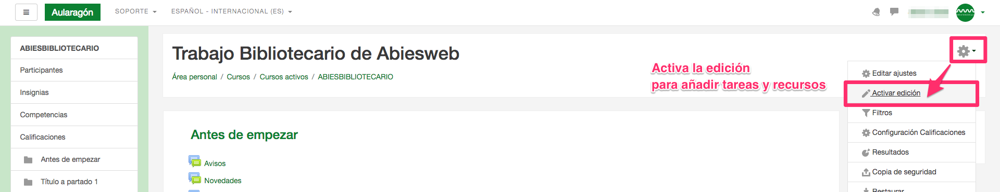
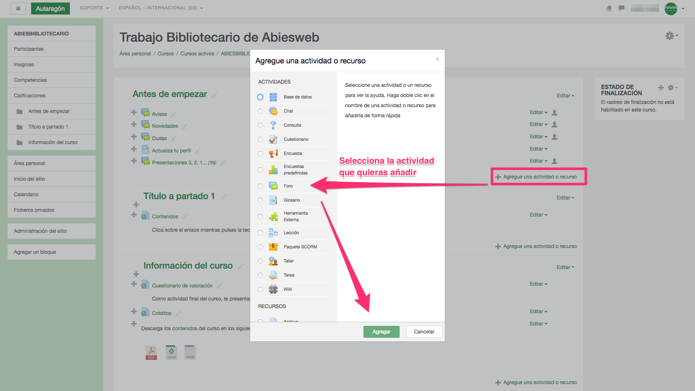
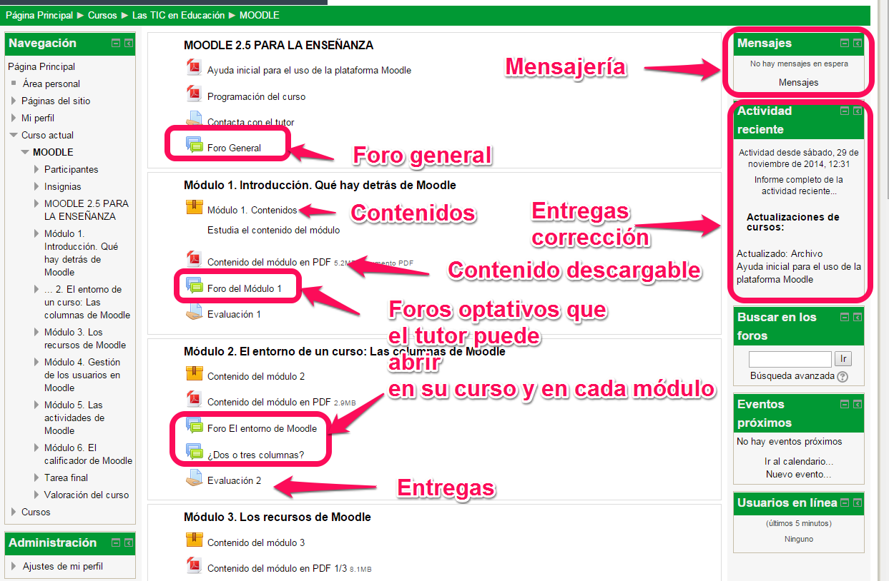

3.3. Foros
Avisos: En este foro sólo puede publicar el tutor. Aquí se publicarán las noticias de interés para todos los participantes del curso.
Dudas: los alumnos y tutores tienen este espacio de debate para plantear y resolver dudas.
Presentaciones 3, 2, 1... ¡Ya! el alumno se presenta al resto de compañeros y contesta a las participaciones del resto de compañeros. Tanto este foro como la tarea *Actualiza tu perfil* son de corrección automática o la marca el propio alumno como completada, el tutor no tiene que hacer nada, salvo contestar a las presentaciones de los alumnos.
Foros propios del curso: El tutor puede abrir foros en su curso incluso a nivel de módulo
¿Cómo puedo abrir un foro?
Tenemos que activar la edición del curso:

Y luego añadir el foro en añadir actividad

Suscripción de la mensajería.
Si deseáis que vuestros Mensajes a los alumnos, así como vuestras aportaciones en los Foros de Moodle lleguen también como email a los alumnos que estén suscritos al Foro, deberéis editar vuestro perfil (Administración -> ajustes de mi perfil -> editar perfil) y poner vuestro email.

Imagen 5. CATEDU. Imagen de uso libre

Curso de Tutores Noveles de Aularagón por Javier Quintana Peiró y Equipo de CATEDU bajo licencia Creative Commons Reconocimiento-NoComercial-CompartirIgual 4.0 Internacional License.